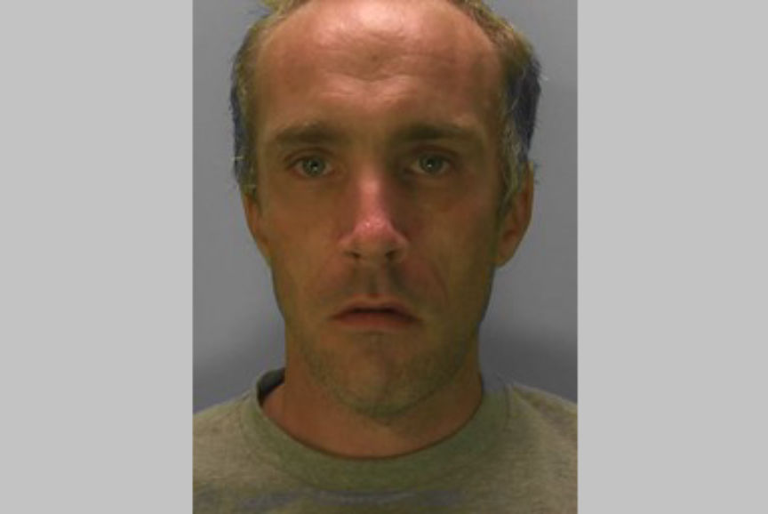
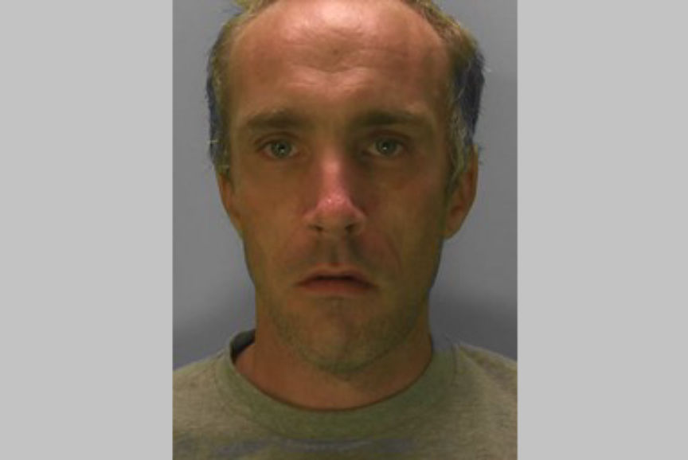

Moderators of a Child Abuse Site Sentenced
~2 min read | Published on 2024-02-20, tagged Child-Abuse, Child-Porn, Pedophile, Sentenced using 391 words.
Two UK men were sentenced to a combined total of over 21 years in prison for their roles in the moderation of a dark web child sexual abuse site.
Nathan Bake, 28, and Martin Yates, 48, were two of the three UK-based moderators at the now-defunct dark web child sexual abuse site, "The Annex." Bake acted as the site's head moderator, while Yates was an assistant moderator.
Investigations revealed that Bake was the second in command of the site. He was in charge of managing the site's 30 staff members. The site had over 90,000 members, who participated in the distribution and discussion of the most extreme kinds of child sexual abuse material
Like other moderators at the site, Yates enforced the site's rules and advised the site's members on how to avoid arrest. He, however, did not follow his advice and used "yates704" as his username. Chats recovered by the investigators revealed that he told other site users his first name, age, and where he lived.

NCA investigators used the information he had revealed to identify and arrest Yates at his residence in July 2022. On being questioned, Yates admitted he was a moderator at the site and that he had shared child abuse material.
NCA investigators arrested Bake at his home in November 2022. He was viewing child abuse images on one of his laptops. A search of his residence resulted in the seizure of several electronic devices.
The investigators found hundreds of thousands of child sexual abuse material in the devices. Bake also had a 576-page pedophile manual.
The investigators also recovered evidence showing that Bake was the co-creator of a second child abuse site. He was also the head moderator of a site with links to dark web child abuse sites.
Bake pleaded guilty to 12 counts in November 2023. He was to sentenced to 16 years in prison on February 14, 2024.
Yates pleaded guilty to six counts in November 2023. He was sentenced to five years and four months in prison on February 19, 2024.
Both men were placed on the sex offenders register for life and given a lifetime sexual harm prevention order.
Kabir Garg, 33, the third UK-based moderator at the site, was jailed for six years in June 2023.
The site's lead administrator, 58-year-old William Michael Spearman of Alabama, was sentenced to life in prison in January 2024.
Nathan Bake
Nathan Bake, 28, and Martin Yates, 48, were two of the three UK-based moderators at the now-defunct dark web child sexual abuse site, "The Annex." Bake acted as the site's head moderator, while Yates was an assistant moderator.
Investigations revealed that Bake was the second in command of the site. He was in charge of managing the site's 30 staff members. The site had over 90,000 members, who participated in the distribution and discussion of the most extreme kinds of child sexual abuse material
Like other moderators at the site, Yates enforced the site's rules and advised the site's members on how to avoid arrest. He, however, did not follow his advice and used "yates704" as his username. Chats recovered by the investigators revealed that he told other site users his first name, age, and where he lived.

Martin Yates
NCA investigators used the information he had revealed to identify and arrest Yates at his residence in July 2022. On being questioned, Yates admitted he was a moderator at the site and that he had shared child abuse material.
NCA investigators arrested Bake at his home in November 2022. He was viewing child abuse images on one of his laptops. A search of his residence resulted in the seizure of several electronic devices.
The investigators found hundreds of thousands of child sexual abuse material in the devices. Bake also had a 576-page pedophile manual.
The investigators also recovered evidence showing that Bake was the co-creator of a second child abuse site. He was also the head moderator of a site with links to dark web child abuse sites.
Bake pleaded guilty to 12 counts in November 2023. He was to sentenced to 16 years in prison on February 14, 2024.
Yates pleaded guilty to six counts in November 2023. He was sentenced to five years and four months in prison on February 19, 2024.
Both men were placed on the sex offenders register for life and given a lifetime sexual harm prevention order.
Kabir Garg, 33, the third UK-based moderator at the site, was jailed for six years in June 2023.
The site's lead administrator, 58-year-old William Michael Spearman of Alabama, was sentenced to life in prison in January 2024.